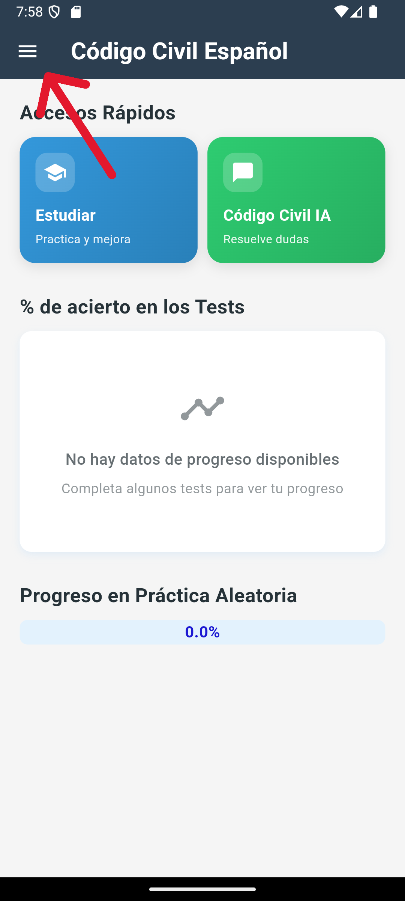
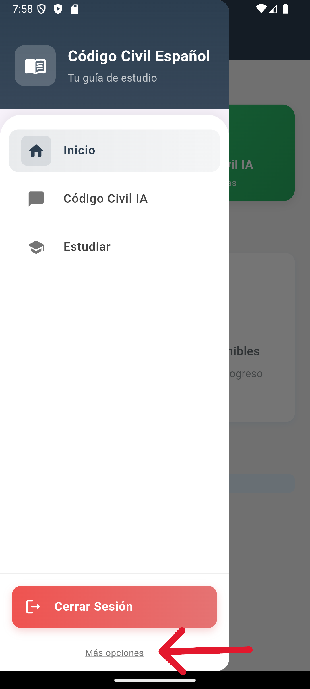
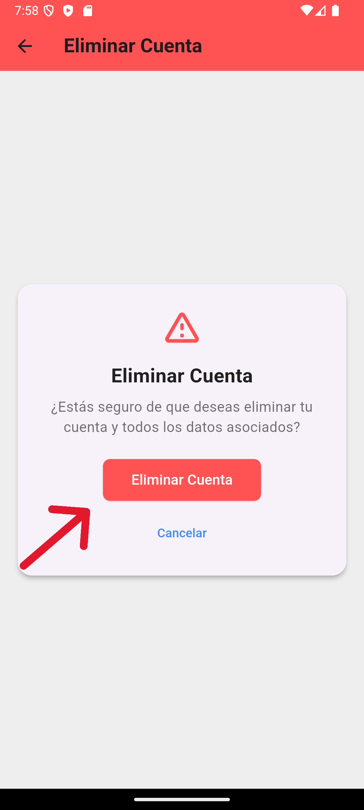

Abre la aplicación "Código Civil Español" y navega hasta el menú principal. Busca el ícono de configuración o perfil de usuario, generalmente ubicado en la esquina superior derecha o en el menú lateral.
Selecciona la opción "Configuración" o "Ajustes de Cuenta". Dentro de esta sección, encontrarás una opción llamada "Eliminar Cuenta".
Haz clic en "Eliminar Cuenta" y sigue las instrucciones proporcionadas. Se te pedirá confirmar tu decisión y posiblemente introducir tu contraseña para verificación.
Confirma la eliminación definitiva de tu cuenta. Este proceso es irreversible y eliminará permanentemente:
¿Necesitas ayuda? Contacta con nuestro equipo de soporte:
\u2709️ silvioabogado@gmail.com